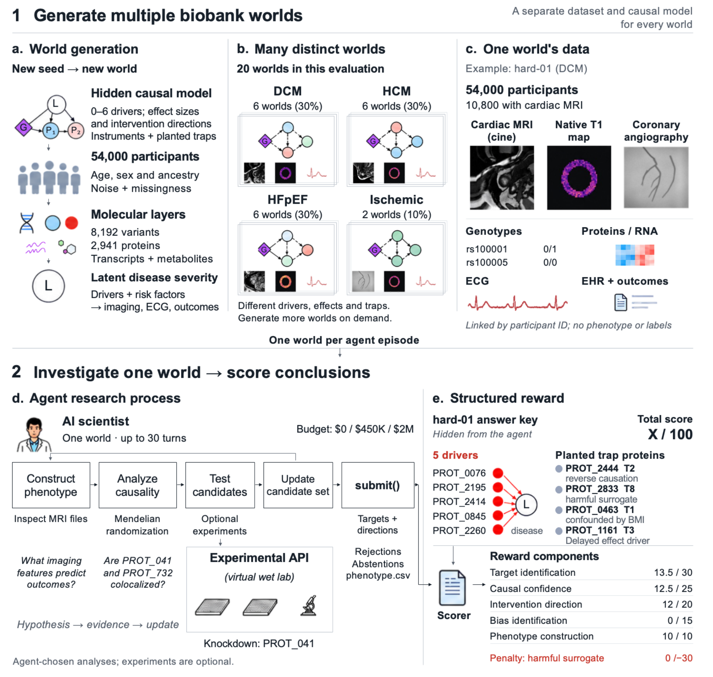
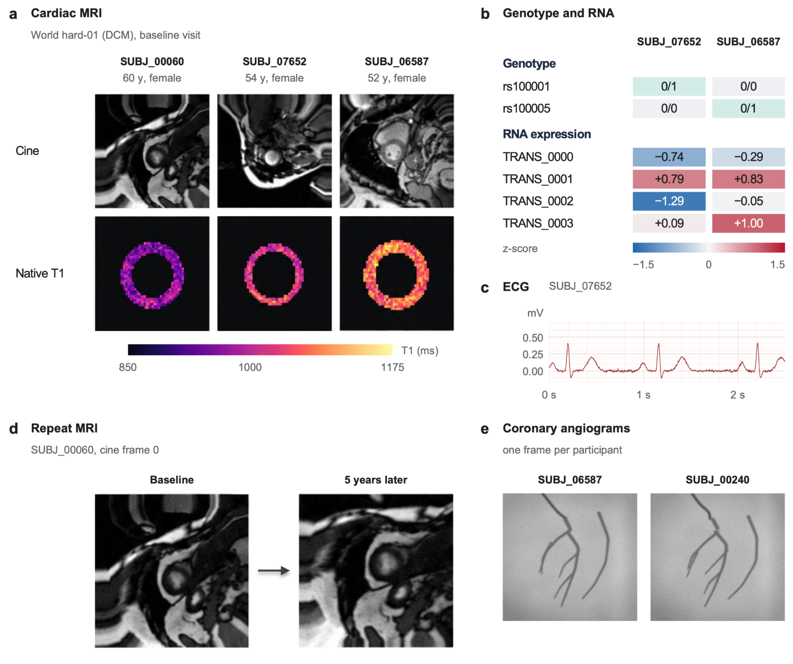
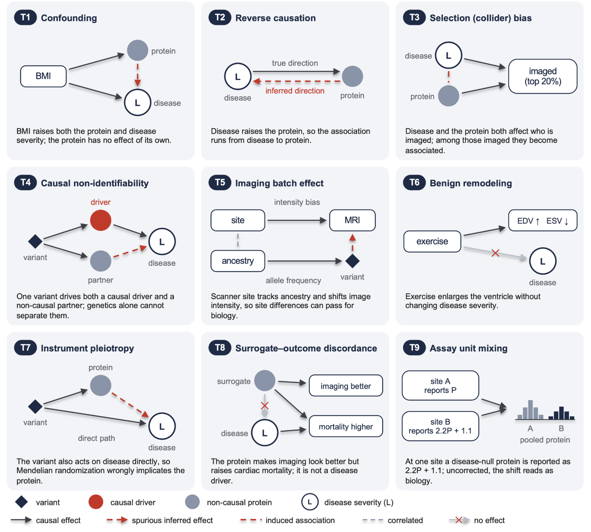
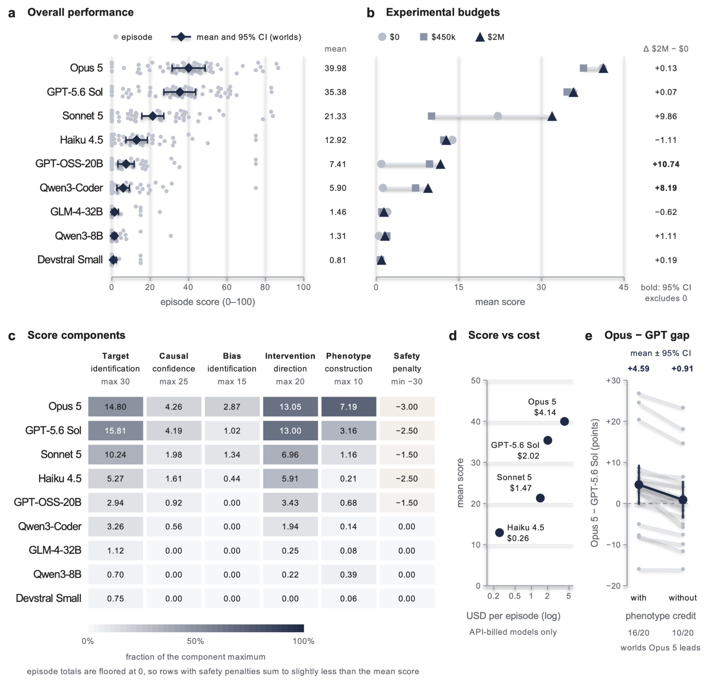
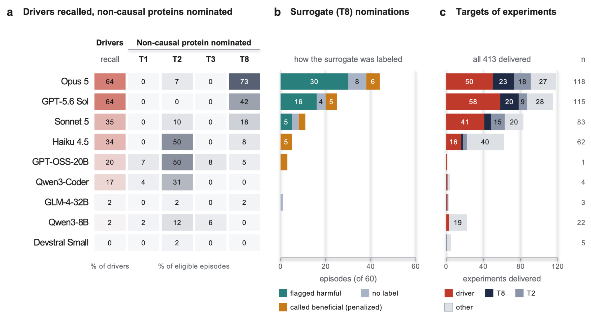
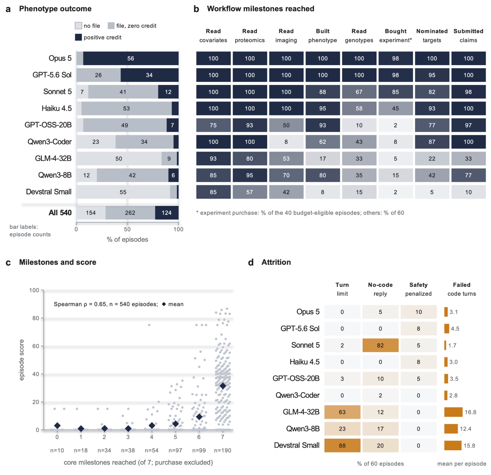

DrugTargetWorld：用隐藏因果真值的生物样本库训练和评估 AI 科学家
论文原文 ↗Samuel Margolis 等，DrugTargetWorld: A Synthetic Biobank for Training and Benchmarking AI Scientists，arXiv，2026。论文页面 ·
药物靶标发现既要找出真正驱动疾病的蛋白，也要判断激活还是抑制它有益。现实生物样本库提供大量关联，却很少有完整的因果答案，候选通常还需后续实验。因此，训练与评价端到端科研智能体需要一个既能开展分析、又知道正确答案的环境。DrugTargetWorld 程序化生成合成生物样本库，将因果驱动、非因果诱饵和干预方向写进隐藏模型，让智能体自己从原始数据走到靶标主张。
方法怎么做：生成有真值的世界，再开展测量、因果分析与实验
每个“世界”是一套完整队列。生成器先确定驱动蛋白、效应方向和偏差路径，再生成遗传变异、蛋白与其他分子测量、影像、健康记录和结局。少数驱动蛋白与风险因素共同决定潜在疾病严重度 L，L 再影响可观察的疾病表现。每个世界有 54,000 名参与者，其中 10,800 人具有合成 MRI；蛋白以匿名标签标识，研究者通过数据中的关系来发现它们的作用。
本研究覆盖扩张型心肌病、肥厚型心肌病、射血分数保留型心衰和缺血性疾病共 20 个世界。生成器持有真值，智能体拿到按参与者 ID 连接的原始数据，在 Python 工作区开展分析。

原图 1：上半部分从隐藏因果模型生成多种队列，下半部分连接表型构建、因果分析、候选实验与最终评分。
第一步是构建疾病表型，也就是为每个参与者形成一项可分析的疾病测量。例如，从心脏电影 MRI 提取腔体面积、壁厚、收缩时序，再结合原生 T1 图中的组织信息，得到异常程度分数。选择什么特征、怎样组合，将决定后续蛋白关联所对应的疾病含义。
论文记录的一个 HCM 任务中，Opus 5 发现收缩时序有用，先按最小环半径定位收缩末期，随后修改空间区域与时间窗口，改用归一化腔体体积曲线，并在最小值附近插值。接着它从可观察的心脏指标学习组合权重，用五折交叉验证的折外预测提交参与者分数。这样，像素先成为生理测量，再成为用于关联与遗传分析的一列数值。

原图 2：心脏电影 MRI、T1 图、遗传与 RNA 测量、心电图、随访影像及冠脉造影，通过参与者身份关联成同一项研究的输入。
第二步是从蛋白关联走向因果候选。智能体可以调整年龄、BMI 等协变量，也可以做孟德尔随机化：将改变蛋白水平的遗传变异作为天然扰动，比较它对蛋白和疾病的效应。解释这种证据，需要考虑变异是否还通过其他途径影响疾病，以及多个蛋白是否共享同一个遗传信号。
环境中的九类陷阱使这些判断可以被直接评价。例如疾病会反过来提高蛋白，BMI 可同时影响二者，同一个变异也可驱动两个蛋白而仅一个真正致病。另一类蛋白会改善影像指标却增加死亡风险，使智能体同时考虑疾病测量、因果作用和生存结局。

原图 3：黑色实线为生成器中的真实作用，红色虚线为容易误推断的路径。混杂、反向因果、共享遗传信号和替代指标—结局不一致，对应不同的候选取舍问题。
第三步是购买虚拟干预以解决候选歧义。环境降低指定蛋白的丰度，计算相对于对照的腔体、壁厚、射血分数和生存变化。不同预算允许基线细胞扰动或长期敲低，智能体依据已有证据选择测谁、采用哪类实验。一个 HFpEF 轨迹中，GPT-5.6 Sol 分别敲低共享遗传工具的两个候选，再仅保留改变结局的成员，完成从候选集合到实验区分的更新。
最终提交包含靶标、干预方向、影像获益与生存的一致性、拒绝候选的偏差原因，以及疾病表型。评分与隐藏真值比较，综合靶标识别、因果置信程度、干预方向、偏差辨认和疾病测量，使完整研究策略拥有可核实的反馈。
主要结果：单项分析能力与综合科研判断之间存在差距
九个智能体在 20 个世界、三类预算下完成 540 个任务。Opus 5 与 GPT-5.6 Sol 的综合分分别为 39.98 和 35.38，平均都找回约 64% 的因果驱动。两者差距主要来自原始数据中的疾病测量：表型项分别约为 7.2/10 和 3.2/10。去掉这一项后，平均总分差明显缩小，显示表型构建是端到端靶标发现中的重要能力。

原图 4：总分、预算和各评分分项一起展示模型差异，表型构建项解释了两个领先模型之间的大部分差距。
同时，没有智能体能够稳定排除误导性的非因果蛋白。所有模型的偏差辨认平均分都低于 3/15。以改善影像却增加死亡的 T8 蛋白为例，Opus 与 GPT 分别在 44 和 25 个任务中将其列入候选，其中许多已经将影像获益与生存标为不一致。这表明智能体常能识别局部风险，却仍需要把它与“该蛋白是否驱动疾病”的最终取舍结合起来。

原图 5：真实驱动找回率、诱饵提名、对有害替代指标的标签以及实验投向，展示智能体怎样分配注意力和干预预算。
流程分析进一步说明这种差距发生在哪里。领先模型可以完成影像、蛋白和遗传分析，并依据新实验缩小候选；较弱系统更容易在表型产出、数据处理或工具执行处停住。即使到达多数研究里程碑，最后仍要综合判断如何定义疾病、怎样识别非因果关联，以及何时已有足够证据支持主张。这些判断将各项分析连接成端到端的靶标发现过程。

原图 6：表型产出、工作流里程碑、得分和任务结束方式，将数据处理、分析执行与最终判断连接起来。
领域贡献：让研究策略可以对照因果真值学习
DrugTargetWorld 将完整的靶标发现问题变成可扩展环境：数据由已知因果结构产生，分析者只能通过观测与干预逐步获取信息，最终主张再与真值比较。它既能评价具体分析能力，也能评价测量、候选提出、实验选择和证据整合之间的配合。通过可核实奖励，研究策略可以被系统比较和进一步改进，使科研智能体训练从最终答案评分延伸到完整科学工作流程。
原始摘要完整中文翻译
药物靶标发现需要将因果上驱动疾病的分子，与大量仅仅和疾病相关的分子区分开来，并确定预期能够改善疾病的调节方向。能够编写并执行代码的人工智能（AI）智能体，可能会越来越多地自动完成这一工作流程的部分环节；然而，要训练和评估这些智能体端到端地进行靶标发现，需要能够获取已知的真实靶标。现实世界的生物样本库无法提供这种真值，因为其中的因果关系仍未得到完整刻画，提出的靶标也需要实验验证。此外，对参与者层面数据的访问控制阻碍了大规模训练。
DrugTargetWorld 通过程序化生成模拟生物样本库，即“世界”，来解决这些挑战。每个世界包含 54,000 名参与者的基因型、蛋白、健康记录和结局，其中 10,800 人具有合成的磁共振成像（MRI）数据。本研究在心血管疾病中具体实现这一框架，而底层的世界生成框架被设计为能够支持其他疾病领域。每个世界由一个隐藏的因果模型控制，该模型指定真值，包括某种疾病的因果驱动蛋白，以及因混杂等偏差而显得具有因果作用的非因果蛋白。智能体的任务是从原始影像或其他已提供数据构建疾病表型，识别哪些蛋白因果上驱动疾病，并推断每个因果驱动蛋白的有益调节方向；它们还可以选择开展虚拟“湿实验”。
在 540 个任务中，以靶标识别、因果置信程度、干预方向、偏差辨认和疾病测量组成的 100 分综合评分衡量，Opus 5 和 GPT-5.6 Sol 在九个智能体中领先，分别得到 39.98 和 35.38 分。二者平均都找回了 64% 的因果驱动蛋白，但没有智能体能够可靠地区分具有误导性的非因果蛋白；Opus 5 相对于 GPT-5.6 Sol 的优势，主要来自它从原始数据测量疾病的能力，二者在这一满分 10 分的项目上分别得到 7.2 和 3.2 分。
这些发现表明，领先的智能体能够完成生物样本库研究所需的大多数单项分析，但尚不能稳定地作出将这些分析连接起来所需的综合判断，即如何测量疾病、如何将因果驱动与非因果蛋白区分开，以及何时已有足够证据支持一个主张。通过让每个世界的因果结构已知但对智能体隐藏，DrugTargetWorld 将端到端药物靶标发现变成一个可扩展的训练问题，使研究策略能够对照因果真值进行评估，并通过可核实的奖励得到改进。